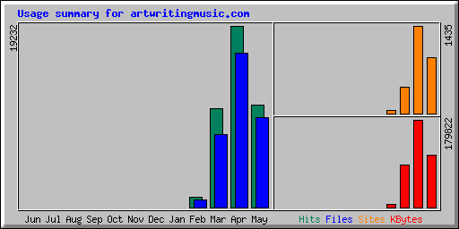

| Summary by Month | ||||||
|---|---|---|---|---|---|---|
| Month | Daily Avg | Monthly Totals | ||||
| Hits | Files | Sites | KBytes | Files | Hits | |
| May 99 | 540 | 473 | 912 | 108248 | 9477 | 10814 |
| April 99 | 641 | 543 | 1435 | 179822 | 16298 | 19232 |
| March 99 | 337 | 247 | 439 | 87706 | 7674 | 10465 |
| February 99 | 133 | 98 | 58 | 7003 | 790 | 1069 |
| Totals | 382779 | 34239 | 41580 | |||
| Generated by Webalizer Version 1.20 |